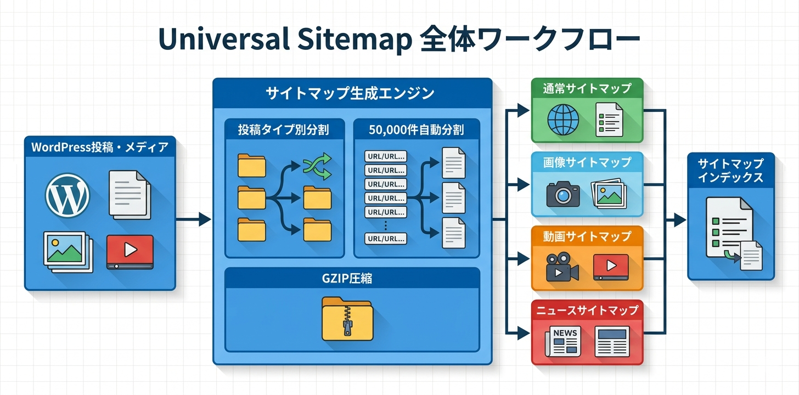

Kashiwazaki SEO Universal Sitemap マニュアル
Kashiwazaki SEO Universal Sitemap は、WordPressサイト向けに投稿タイプ別・画像・動画・ニュースの4種類のXMLサイトマップを自動生成するプラグインです。50,000件での自動分割、静的/動的モード切替、GZIP圧縮に対応し、大規模サイトでも高速に配信できます。
XMLサイトマップは、検索エンジンがサイト内の全ページを効率的に発見・クロールするための基本ツールです。本プラグインは投稿タイプ別、画像、動画、ニュースの4種類のサイトマップを生成し、50,000件での自動分割とGZIP圧縮に対応します。
主な機能
マルチフォーマット
投稿タイプ別・画像・動画・ニュースの4種類のサイトマップを生成
自動更新
コンテンツ更新時にサイトマップを自動再生成。50,000件で自動分割
高速配信
静的/動的モード切替とGZIP圧縮対応で大規模サイトにも対応
プラグインの特長
- 投稿タイプ別サイトマップで各コンテンツタイプを個別にインデックス管理
- 画像サイトマップにより画像検索での露出を向上
- 動画サイトマップで動画コンテンツの検索エンジン認識を強化
- ニュースサイトマップでGoogle News向けのインデックス最適化
- 50,000アイテムを超える場合はサイトマップインデックスで自動分割
- 静的ファイル生成と動的生成の2つのモードから選択可能
- GZIP圧縮により帯域幅を節約し配信速度を向上
- コンテンツの公開・更新・削除時にサイトマップを自動再生成
- リライトルールによるクリーンなサイトマップURL
<link rel="sitemap">をwp_headに自動出力

SEO・GEO（生成AI最適化）への効果
検索エンジンのクロール最適化
XMLサイトマップは検索エンジンがサイト内のすべてのページを効率的に発見し、クロールの優先順位を判断するための基盤です。本プラグインが生成する投稿タイプ別サイトマップにより、検索エンジンは各コンテンツカテゴリを体系的にクロールできるようになります。
専門検索インデックスへの対応
画像サイトマップ・動画サイトマップ・ニュースサイトマップは、それぞれGoogle画像検索、Google動画検索、Google Newsなどの専門的な検索インデックスへのコンテンツ登録を促進します。これにより、テキスト検索以外からのトラフィック獲得が期待できます。
サイトマップの鮮度維持
コンテンツの公開・更新・削除時に自動再生成されるため、サイトマップは常に最新の状態を維持します。古いURLや存在しないページがサイトマップに残ることを防ぎ、クロールバジェットの無駄遣いを回避します。
大規模サイトへの対応
GZIP圧縮により、数万ページ規模のサイトマップでもサーバー負荷を抑えて高速に配信できます。50,000件での自動分割はXMLサイトマップの仕様に準拠しており、すべてのURLが確実にインデックス対象となります。
生成AI（GEO）への対応
包括的なサイトマップは、AIクローラーがサイト内のすべてのコンテンツを効率的に発見するのに役立ちます。サイトマップによってサイト全体の構造とコンテンツの所在が明示されるため、LLMベースのシステムや生成AI検索エンジンがサイトの全容を正確に把握できるようになります。
目次（マニュアル構成）
| ページ | 内容 |
|---|---|
| 概要 | プラグインの機能概要、SEO/GEO効果、動作要件 |
| インストール・初期設定 | インストール手順、生成モード・サイトマップタイプの基本設定 |
| 詳細設定 | サイトマップ種別ごとの設定、GZIP圧縮、リライトルール、AJAX機能 |
| トラブルシューティング | よくある問題と対処法、動作要件、技術仕様、アーキテクチャ |
動作要件
| 項目 | 要件 |
|---|---|
| WordPress | 5.0 以上 |
| PHP | 7.4 以上 |
| 対応ブラウザ | Chrome、Firefox、Safari、Edge（最新版） |
インストール後すぐに使い始めたい場合は、インストール・初期設定ページに進んでください。